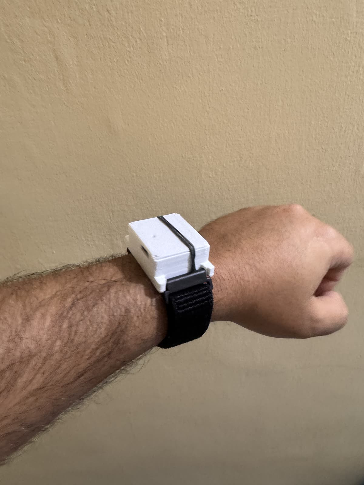
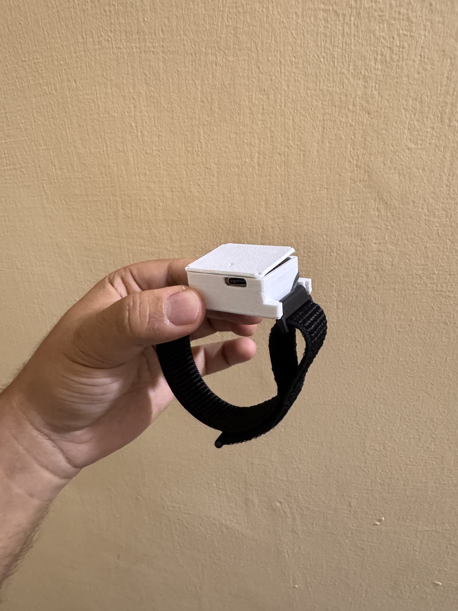
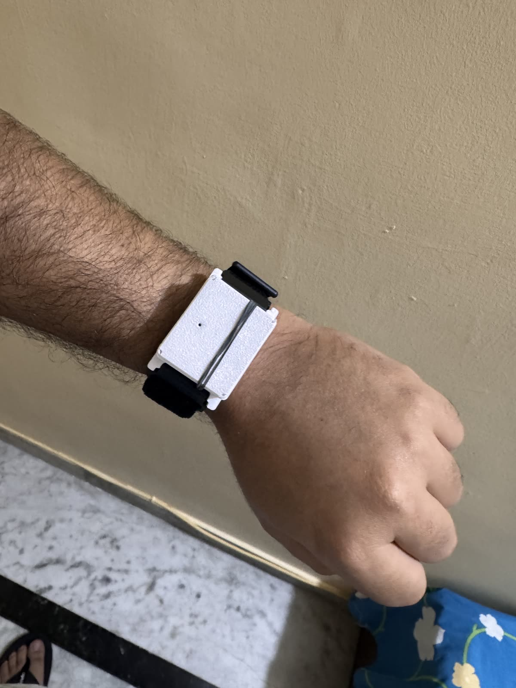

PDM microphone
The current firmware records native 16 kHz mono audio from the XIAO nRF52840 Sense's microphone while the phone subscribes.
A screenless band for the moments worth keeping. V1 is already printed, strapped, and being worn. The next layer turns captured moments into useful personal memory.
01 / THE BUILD LOG
Meet the first physical Keepshake. A 3D-printed white enclosure, a black woven strap, and a live electronics stack make V1 wearable today. The fit, finish, and internals are still evolving.



The original top lid and two tub variants are available as STEP files in the public repository.
02 / THE HARDWARE
This interactive anatomy study explains the V1's core idea. The real enclosure and strap are shown above; the internal layout remains an illustration.
The current firmware records native 16 kHz mono audio from the XIAO nRF52840 Sense's microphone while the phone subscribes.
The mic is off until the iPhone app subscribes. A dedicated hardware mute and clear recording indicator remain product goals.
The band sends raw audio to the native iPhone gateway over Bluetooth Low Energy. The prototype enclosure exposes USB-C.
V1 puts its electronics in a white printed housing on a black woven band. The STEP files include two tub attachment variants.
The exploded view is a visual explanation, not a CAD render or a verified component layout. See the real prototype photos and original STEP files above.
03 / THE SOFTWARE LAYER
The capture path is taking shape now. The next step is turning conversations into the decisions, promises, reasons, and moments you actually want to remember.
“If we hotfix the sync bug, we skip QA. I'd rather hold it.”
LEO · CONVERSATION EXCERPTWhy: The hotfix would bypass QA.
Illustrative memory experience. This sample is a product vision, not a transcript from the wearable V1.
Understand what was settled and the reasoning behind it.
Turn commitments from conversation into things you can act on.
Search your own context and trace answers back to their source.
04 / THE iPHONE APP
The native V1 app already connects to the band, saves incoming audio in local chunks, and retries uploads. The richer Today, Memory, and Ask experience shown here is the interface we're building toward.
Interactive product vision, not a screenshot of the current capture app.
Your day is coming together.
One big decision, two things to follow up on, and a question still open.
The things worth keeping.
Your context, ready when you need it.
You decided to ship it in 1.4.2 rather than hotfix it, because a hotfix would skip QA.
↗ Standup · 09:18–09:21OPEN SOURCE / BUILT IN PUBLIC
There is a band on a wrist, a native iPhone gateway in the repo, and a lot still to build. Explore the hardware and software, inspect the CAD, or help shape the next version of this personal assistant.
Explore the project V1 PROTOTYPE · NOT A FINISHED PRODUCT OR A PRODUCT ANNOUNCEMENT